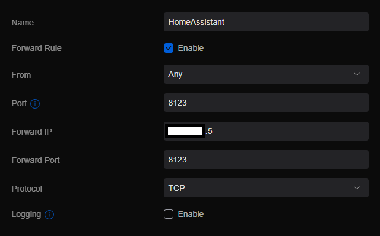
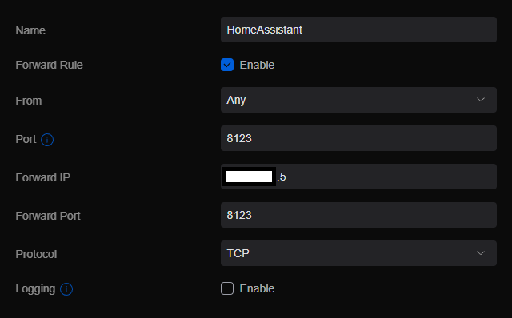
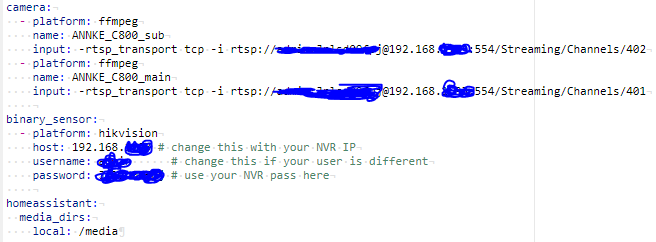
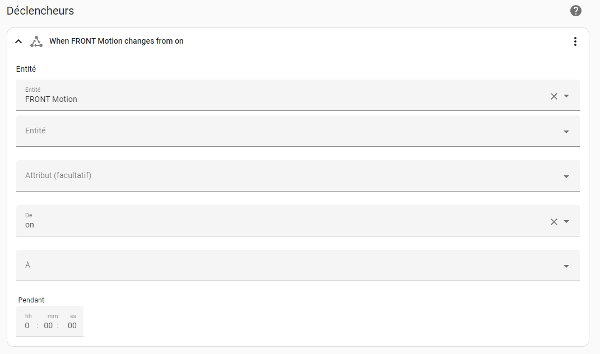
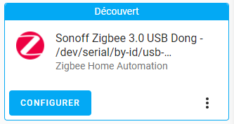

Home Assistant
Entity naming convention
- ROOM_DEVICES_POSITON-IN-THE-ROOM
Duckdns and portforward
Follow this video to get duck DNS and port forward installation. This article is also usefull for port fowarding on USG : link

 

Smoke and CO detectors
Model fireangel SB1 optical smoke alarm.
Test : press 5 second the test button and it will bip 2 times. When biping for alarm smoke presence, press test for 5 second, it will silence the alarm for 8 min. Manual
CO detector model fireangel FA3313.
There is a possibility to deactivate it with a small spin a keep stored in the office draw. To test, push the button test, it will ignite bips (2 times after I tested it). CO light is red when alarm detected high CO value. The exclamation point means battery low and the puls wave is the heartbeat if working and blink green. Test every month and requires an automation on home assistant. Manual
Security Cameras
- double stack combine NVR and face recognition
- deepstack for recognition
- frigate for NVR link
Hikvision integration
After few tries with Frigate I reliazed that the motion detection as well as the stream were not as good as expected. So I moved to hikvision integration for testing where I've been able to stream an image at 15fps (not confirmed, said by the tool) and able to get motion detection made by Annke camera embedded software and an entity on HA to detect the motion.
- configure Annke camera event

- configure Annke camera system

- on HA, install Hikvision integration modifying the config.yaml file 
- restart HA and the camera should be visible as an entity.
- to create an automation, this was working 


Backup
Once the installation of HASSio is done, must put in place backup system.
Back up and restore Home Assistant
Backup of your Home Assistant and add-on data and configuration. They are stored in a compressed archive file (.tar). Backups are made from the Supervisor Backups panel. There is also a service available that allows you to trigger the creation of a backup from an automation. Backups are stored in the /backup directory. A full backup includes the following directories:
- config
- share
- addons (only manually installed or created add-ons, not those installed from the store)
- ssl
- media
A partial backup consists of any number of the above default directories and installed add-ons.
Backup from the UI
- Go to Configuration > Add-ons & Backups > Backups in the UI.
- Provide a name for the backup.
- Choose full or partial.
- Choose to password protect or not. Password-protected backups cannot easily be browsed outside of Home Assistant OS.
- Click “Create” to begin the backup.
Restoring backup after new install
You can make use of backup which you have copied off of a previous install to restore to a new installation during the onboarding process. Follow the link at the bottom of the account creation page to upload your backup from the previous installation. For restoring a backup at any other time, visit the Supervisor backup panel in your UI and use the following steps:
- Select “Upload Backup” from the icon in the upper right of the page.
- Click on the folder icon to navigate to your backup .tar file and select it.
- When the upload is completed, you will be presented with the backup restore dialog for restoring it, and can then choose to restore in full or in part by manually selecting individual items.
- If the backup you are uploading is more than 1GB in size, it can be faster and more efficient to make use of the Samba add-on in order to transfer files to the /backup directory.
- The length of time it takes to create or restore backup will depend on how much you have to compress or decompress.
- If you’re looking to slim down your backup, check if your configuration directory contains a large database file (home-assistant_v2.db). See the recorder integration page for options to keep your database data down to a size that won’t cause issues. Note the keep days, purge interval, and include/exclude options.
- When the restore is complete, Home Assistant will restart to apply the new settings. You will lose the connection to the UI and it will return once the restart is completed.
- Can also use the CLI commande to do so.
Copy to another distant location
Copy the back to Sysnology NAS via SMB share. Very easy to do. Link
The end of this video shows how to add a back up entity on the Home assistant dashboard: Link
Configuration that worked:
host: 192.168.0.20
share: Sauvegarde_distante
target_dir: /HomeAssistant
username: admin
password: mdpnormal
keep_local: 0
keep_remote: 2
trigger_time: '00:00'
trigger_days:
- Mon
- Tue
- Wed
- Thu
- Fri
- Sat
- Sun
exclude_addons: []
exclude_folders: []
Logs:
[s6-init] making user provided files available at /var/run/s6/etc...exited 0.
[s6-init] ensuring user provided files have correct perms...exited 0.
[fix-attrs.d] applying ownership & permissions fixes...
[fix-attrs.d] done.
[cont-init.d] executing container initialization scripts...
[cont-init.d] done.
[services.d] starting services
[services.d] done.
[22-03-14 18:15:43] INFO: ---------------------------------------------------
[22-03-14 18:15:43] INFO: Host/Share: 192.168.0.20/Sauvegarde_distante
[22-03-14 18:15:43] INFO: Target directory: /HomeAssistant
[22-03-14 18:15:43] INFO: Keep local/remote: 0/2
[22-03-14 18:15:43] INFO: Trigger time: 18:20
[22-03-14 18:15:43] INFO: Trigger days: Mon Tue Wed Thu Fri Sat Sun
[22-03-14 18:15:43] INFO: ---------------------------------------------------
[22-03-14 18:15:46] INFO: Samba Backup started successfully
[22-03-14 18:20:46] INFO: Backup running ...
[22-03-14 18:20:46] INFO: Creating backup "Samba Backup 2022-03-14 18:20"
[22-03-14 18:20:48] INFO: Copying backup d4aec165 (Samba_Backup_2022_03_14_18_20.tar) to share
[22-03-14 18:20:49] INFO: Deleting d4aec165 (Samba Backup 2022-03-14 18:20) local
[22-03-14 18:21:02] INFO: Backup finished
create a manual back-up
We need to create a script and execute it.
service: hassio.addon_stdin data: addon: 15d21743_samba_backup input: trigger

HACS Home Assistant Community Store
Link This is a library of github repositories for bakend integration and front end view (themes....). I found usefull : Front end :
- Tracking Number Card for Home Assistant
- scheduler-card
- Travel Time Card for Home Assistant
Integrations :
- Car Wash
- Amazon Rekognition
- Office 365 Integration for Home Assistant
- Nespresso Ble coffee machine
Zigbee Home Assistant (ZHA)
Plugin the Sonoff Zigbee dongle on the Home Assistant and restart the Home assistant. By doing that I have automatically discovered the dongle into Home Assistant.

Once clicked on Configure there is a step to automatically install the dongle. This is a successful install :

Link give us the next step to add devices.
Add sub-devices to the gateway dongle


Make the sub-devices enter the pairing mode, and you can control it after adding successfully

Mirror
Automatic Installation Scripts Sam (@sdetweil, long time contributor of the MagicMirror² framework) maintains a easy to use installation and update script: Link
The MagicMirror Package Manager is a command line interface designed to simplify the installation, removal, and maintenance of MagicMirror modules
Roborock and Xiaomi
Roboroc integration doesn't work for now and automatically ask to make use of xiaomi Miio integration instead. The roborock needs to be controlled from the Mobile application "Mi Home" instead of the Roborock application. It doesn't change anything in the interface, once logged in, the interface is exactly the same. The following integration appears once found by Xiaomi home assistant integration tool.

I found a HACS map extractor to make a beautiful dashboard with the map of the vacuum. I don't feel like it is a need for now. It's called "Xiaomi Cloud Map Extractor".
My feedback and questions:
- je ne comprends pas comment imbriquer les briques d'automation les unes aux autres.
- Je veux créer des briques d'automations élémentaires pour les cascader et arriver à un modèle complexe
- Sous quel forme se présente ces briques élémentaire dans Home Assistant ?
- Node red offre-t-il un affichage "human readable" que Home assistant n'offre pas ?
- Est-e que HA sait déclencher des automations sur des evenements ?
- Fonctionement en machine d'état posible ??